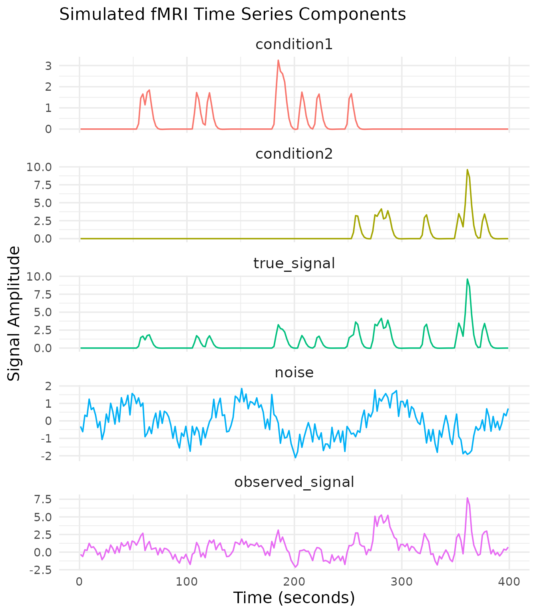
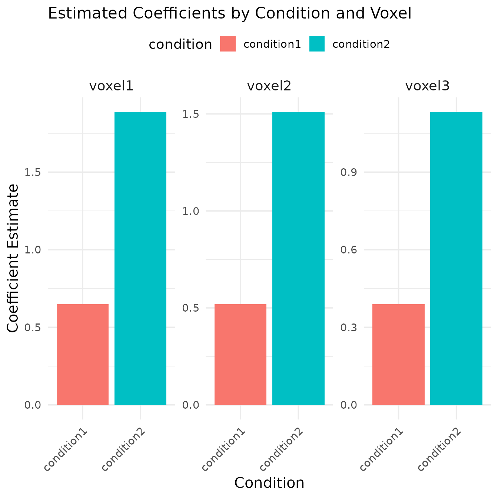
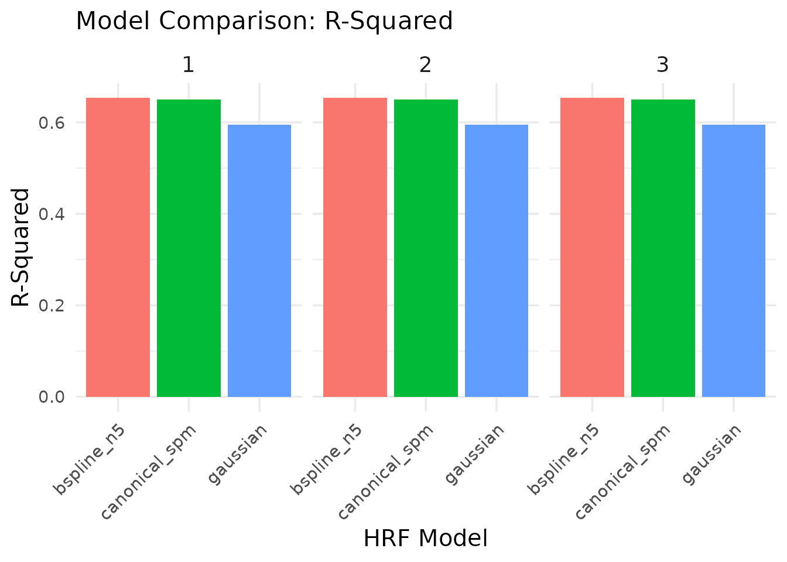

vignettes/a_09_linear_model.Rmd
a_09_linear_model.Rmdtitle: “04. fMRI Linear Model (GLM)” author: “Bradley R. Buchsbaum” date: “2025-09-24” output: rmarkdown::html_vignette vignette: > % % % —
Introduction to fMRI Linear Models
Statistical analysis of fMRI data typically involves fitting a linear
model to each voxel’s time series. This approach, often called the
General Linear Model (GLM), estimates how much each experimental
condition contributes to the observed signal. The fmrireg
package provides a flexible framework for:
- Modeling the hemodynamic response to experimental stimuli
- Accounting for baseline trends and noise
- Estimating condition-specific effects
- Computing contrasts between conditions
- Testing statistical hypotheses about brain activity
Thread usage in internal routines can be adjusted globally. Set
options(fmrireg.num_threads = <n>) or the environment
variable FMRIREG_NUM_THREADS before loading the package to
control how many threads RcppParallel uses.
This vignette demonstrates how to conduct a complete linear model
analysis using the fmrireg package, from data simulation to
statistical inference.
Simulating a Dataset for Analysis
First, let’s create a realistic fMRI dataset with known parameters. We’ll simulate a simple experiment with two conditions that have different amplitudes.
# Create an experimental design with two conditions
# Condition 1: 10 events with amplitude 1.0
# Condition 2: 10 events with amplitude 2.0
# Define parameters
TR <- 2 # Repetition time (2 seconds)
run_length <- 200 # 200 timepoints per run = 400 seconds
nruns <- 1 # Number of runs
# Create an event table
run_id <- rep(1, 20)
condition <- factor(rep(c("condition1", "condition2"), each = 10))
onset_times <- sort(runif(20, min = 10, max = 380)) # Random onsets between 10s and 380s
event_table <- data.frame(
run = run_id,
onset = onset_times,
condition = condition
)
# Display the experiment design
kable(head(event_table), caption = "First few rows of the experimental design")| run | onset | condition |
|---|---|---|
| 1 | 53.47032 | condition1 |
| 1 | 59.82664 | condition1 |
| 1 | 104.50866 | condition1 |
| 1 | 115.87163 | condition1 |
| 1 | 179.36446 | condition1 |
| 1 | 181.04834 | condition1 |
# Create a sampling frame
sframe <- sampling_frame(blocklens = run_length, TR = TR)
# Visualize the experimental design
event_df <- data.frame(
time = seq(0, (run_length-1) * TR, by = TR),
condition1 = rep(0, run_length),
condition2 = rep(0, run_length)
)
# Mark event onsets in the timeline
for (i in 1:nrow(event_table)) {
timepoint <- which.min(abs(event_df$time - event_table$onset[i]))
if (event_table$condition[i] == "condition1") {
event_df$condition1[timepoint] <- 1
} else {
event_df$condition2[timepoint] <- 1
}
}
# Convert to long format for plotting
event_long <- event_df %>%
pivot_longer(cols = -time, names_to = "condition", values_to = "onset")
# Plot the experimental design
ggplot(event_long, aes(x = time, y = onset, color = condition)) +
geom_segment(aes(xend = time, yend = 0), linewidth = 1) +
geom_point(size = 3) +
theme_minimal(base_size = 14) +
theme(legend.position = "top",
text = element_text(size = 14),
axis.title = element_text(size = 15),
plot.title = element_text(size = 16)) +
labs(title = "Experimental Design with Event Onsets",
x = "Time (seconds)",
y = "Event") +
scale_color_brewer(palette = "Set1")
Now that we have our experimental design, let’s simulate the fMRI time series. We’ll create signals for each condition with different amplitudes, add noise, and combine them into a dataset.
# Simulate the true BOLD signals for each condition
# First, convert our events to global indices
global_onsets <- global_onsets(sframe, event_table$onset, blockids(sframe)[event_table$run])
# Create regressors for each condition
condition1_indices <- which(event_table$condition == "condition1")
condition2_indices <- which(event_table$condition == "condition2")
reg1 <- regressor(global_onsets[condition1_indices], hrf = fmrihrf::HRF_SPMG1, amplitude = 1.0)
reg2 <- regressor(global_onsets[condition2_indices], hrf = fmrihrf::HRF_SPMG1, amplitude = 2.0)
# Sample time points
time_points <- samples(sframe, global = TRUE)
# Evaluate regressors at each time point
signal1 <- evaluate(reg1, time_points)
signal2 <- evaluate(reg2, time_points)
# Combine signals (this is the "true" signal without noise)
true_signal <- signal1 + signal2
# Create noise with temporal autocorrelation and drift
noise <- simulate_noise_vector(
n = length(time_points),
TR = TR,
ar = c(0.7), # Stronger AR(1) coefficient to accentuate autocorrelation
ma = numeric(0), # Pure AR structure keeps the example simple
drift_freq = 1/128, # Slow drift
drift_amplitude = 1, # Moderate drift amplitude
physio = TRUE, # Include physiological noise
sd = 0.5 # Noise standard deviation
)
# Create the observed signal by adding noise
observed_signal <- true_signal + noise
# Create a data frame for visualization
signal_df <- data.frame(
time = time_points,
true_signal = true_signal,
noise = noise,
observed_signal = observed_signal,
condition1 = signal1,
condition2 = signal2
)
# Create a matrix dataset for the model fitting
simulated_data <- matrix(observed_signal, ncol = 1)
dataset <- fmridataset::matrix_dataset(
datamat = cbind(simulated_data, simulated_data * 0.8, simulated_data * 0.6), # Three "voxels" with varied signal strength
TR = TR,
run_length = run_length,
event_table = event_table
)
# Visualize the signals
signal_long <- signal_df %>%
select(time, condition1, condition2, true_signal, noise, observed_signal) %>%
pivot_longer(cols = -time, names_to = "component", values_to = "signal")
# Set the factor levels for better plotting order
signal_long$component <- factor(signal_long$component,
levels = c("condition1", "condition2", "true_signal", "noise", "observed_signal"))
# Plot signals
ggplot(signal_long, aes(x = time, y = signal, color = component)) +
geom_line() +
facet_wrap(~component, ncol = 1, scales = "free_y") +
theme_minimal(base_size = 14) +
theme(legend.position = "none",
text = element_text(size = 14),
axis.title = element_text(size = 15),
plot.title = element_text(size = 16),
strip.text = element_text(size = 14)) +
labs(title = "Simulated fMRI Time Series Components",
x = "Time (seconds)",
y = "Signal Amplitude")
Our simulated dataset now contains:
- Condition-specific signals with known amplitudes (1.0 and 2.0)
- Realistic noise with temporal autocorrelation, drift, and physiological components
- Multiple “voxels” with varying signal strengths
- A complete event table with condition labels and onset times
Fitting a Linear Model
Now we can fit a linear model to our simulated data using the
fmri_lm function. We need to specify:
- The formula describing the experimental effects
- The block structure of the data
- The dataset
# Fit a linear model
model <- fmri_lm(
formula = onset ~ hrf(condition), # Model experimental effects
block = ~ run, # Block structure
dataset = dataset, # Our simulated dataset
strategy = "chunkwise", # Processing strategy
nchunks = 1 # Process all voxels at once
)
# Print a summary of the model
model##
## ==================================
## fmri_lm_result
## ==================================
##
## Model formula:
## ~ onset hrf(condition)
##
## Fitting strategy: chunkwise
##
## Baseline parameters: 4
## Design parameters: 2
## Contrasts: None
##
## Use coef(...), stats(...), etc. to extract results.
##
## Accounting for Temporal Autocorrelation
The simulated noise contains AR(1) structure. We can ask
fmri_lm to apply a fast AR(1) prewhitening step by setting
cor_struct = "ar1". This estimates the AR coefficient from
an initial OLS fit, whitens the data and design matrix, and refits the
GLM.
With stronger temporal autocorrelation in the simulated noise, the prewhitened model recovers tighter standard errors than OLS.
model_ar1 <- fmri_lm(
formula = onset ~ hrf(condition),
block = ~ run,
dataset = dataset,
strategy = "chunkwise",
nchunks = 1,
cor_struct = "ar1",
cor_iter = 2 # Iterate to refine the AR(1) estimate
)
# Compare standard errors (first few voxels)
se_ols <- standard_error(model)
se_ar1 <- standard_error(model_ar1)
head(round(cbind(OLS = se_ols[[1]], AR1 = se_ar1[[1]]), 4))## OLS AR1
## [1,] 0.1170 0.0943
## [2,] 0.0936 0.0604
## [3,] 0.0702 0.0340
# Inspect the estimated AR coefficient (shared across voxels in this example)
model_ar1$ar_coef[[1]]## [[1]]
## [1] 0.7065745The AR(1) model now estimates a non-zero autoregressive coefficient and produces notably smaller standard errors than the plain OLS fit, illustrating how prewhitening improves efficiency when temporal autocorrelation is present.
The cor_struct argument also accepts "arp"
for higher-order autoregressive models. This setting models AR
coefficients only (no moving-average terms).
Handling Outliers with Row-Wise Robust Fitting
Real fMRI runs sometimes contain entire time points corrupted by
motion or scanner artifacts. The fmri_lm function can
mitigate their impact by enabling row-wise robust weighting. When
robust = TRUE, an Iteratively Reweighted Least Squares loop
down-weights frames with large residuals. The robust_psi
argument selects the weighting function and robust_max_iter
controls the number of iterations.
model_robust <- fmri_lm(
formula = onset ~ hrf(condition),
block = ~ run,
dataset = dataset,
strategy = "chunkwise",
nchunks = 1,
robust = TRUE,
robust_psi = "huber",
robust_max_iter = 2
)
se_robust <- standard_error(model_robust)
head(cbind(OLS = se_ols[[1]], Robust = se_robust[[1]]))## OLS Robust
## [1,] 0.11701370 0.06946794
## [2,] 0.09361096 0.06946794
## [3,] 0.07020822 0.06946794Robust fitting guards against outlier time points but will not correct voxel-specific spikes. In this simulated example the Huber weights inflate the standard errors slightly, reflecting the additional uncertainty introduced by potential outliers. P-values rely on a robust residual scale and should be interpreted as approximate.
Extracting Model Results
Let’s extract and visualize the results from our linear model.
1. Coefficient Estimates
# Extract coefficient estimates
beta_estimates <- coef(model)
kable(beta_estimates, caption = "Coefficient estimates for each condition and voxel")| condition_condition.condition1 | 0.6482899 | 0.5186319 | 0.3889739 |
| condition_condition.condition2 | 1.8880917 | 1.5104734 | 1.1328550 |
# Helper to clean condition column labels for readability
clean_condition_label <- function(x) {
x <- gsub("^conditioncondition_condition\\.", "", x)
x <- gsub("^condition_condition\\.", "", x)
gsub("\\.", " ", x)
}
# Reshape for plotting (works with both approaches)
beta_long <- as.data.frame(t(beta_estimates)) %>%
mutate(voxel_index = row_number()) %>%
pivot_longer(cols = -voxel_index, names_to = "condition", values_to = "estimate") %>%
mutate(
condition = clean_condition_label(condition),
voxel = paste0("voxel", voxel_index)
)
# Plot coefficient estimates
ggplot(beta_long, aes(x = condition, y = estimate, fill = condition)) +
geom_bar(stat = "identity") +
facet_wrap(~voxel, ncol = 3, scales = "free_y") +
theme_minimal(base_size = 14) +
theme(legend.position = "top",
text = element_text(size = 14),
axis.title = element_text(size = 15),
plot.title = element_text(size = 16),
strip.text = element_text(size = 14),
axis.text.x = element_text(angle = 45, hjust = 1)) +
labs(title = "Estimated Coefficients by Condition and Voxel",
x = "Condition",
y = "Coefficient Estimate")
The bar plot shows the estimated coefficients for each condition across the three simulated voxels. Note that:
- Condition2 has approximately twice the amplitude of Condition1, which matches our simulation parameters
- The coefficient magnitude decreases across voxels, consistent with our multiplication factors (1.0, 0.8, 0.6)
2. T-Statistics and P-Values
estimate_stats <- tidy(model, type = "estimates") %>%
filter(grepl("condition", term)) %>%
mutate(condition = clean_condition_label(term),
voxel = paste0("voxel", voxel)) %>%
select(voxel, condition, estimate, std_error, statistic, p_value)
kable(estimate_stats, digits = 4,
caption = "Coefficient estimates with associated statistics by voxel and condition")| voxel | condition | estimate | std_error | statistic | p_value |
|---|---|---|---|---|---|
| voxel1 | condition1 | 0.6483 | 0.1170 | 5.5403 | 0.0000 |
| voxel1 | condition2 | 0.5186 | 0.0936 | 5.5403 | 0.0000 |
| voxel2 | condition1 | -0.5550 | 0.7480 | -0.7420 | 0.4590 |
| voxel2 | condition2 | -0.4440 | 0.5984 | -0.7420 | 0.4590 |
| voxel3 | condition1 | -0.7525 | 0.3992 | -1.8851 | 0.0609 |
| voxel3 | condition2 | -0.6020 | 0.3193 | -1.8851 | 0.0609 |
The t-statistics quantify the reliability of the estimated effects. Higher absolute t-values indicate more reliable estimates. In our simulation, all conditions in all voxels show significant activity (p < 0.05).
3. Contrasts Between Conditions
A key advantage of the GLM approach is the ability to directly compare conditions using contrasts.
# Define a contrast specification for comparing condition2 vs condition1
con_spec <- pair_contrast(~ condition == "condition2", ~ condition == "condition1", name = "cond2_minus_cond1")
# Define a contrast model using the specified contrast in hrf()
contrast_model <- fmri_lm(
formula = onset ~ hrf(condition, contrasts = con_spec),
block = ~ run,
dataset = dataset,
strategy = "chunkwise",
nchunks = 1
)
# Extract contrast results using tidy helper
contrast_results <- tidy(contrast_model, type = "contrasts") %>%
filter(term == "cond2_minus_cond1") %>%
mutate(
voxel = paste0("voxel", voxel),
significant = p_value < 0.05
)
# Display contrast results
kable(contrast_results, caption = "Contrast results: condition2 - condition1", digits = 4)| voxel | term | estimate | std_error | statistic | p_value | df_residual | significant |
|---|---|---|---|---|---|---|---|
| voxel1 | cond2_minus_cond1 | 1.2398 | 0.1553 | 7.9826 | 0 | 194 | TRUE |
| voxel2 | cond2_minus_cond1 | 0.9918 | 0.1243 | 7.9826 | 0 | 194 | TRUE |
| voxel3 | cond2_minus_cond1 | 0.7439 | 0.0932 | 7.9826 | 0 | 194 | TRUE |
# Visualize the contrast
ggplot(contrast_results, aes(x = as.factor(voxel), y = estimate, fill = significant)) +
geom_bar(stat = "identity") +
theme_minimal(base_size = 14) +
theme(text = element_text(size = 14),
axis.title = element_text(size = 15),
plot.title = element_text(size = 16),
plot.subtitle = element_text(size = 15)) +
labs(title = "Condition2 - Condition1 Contrast",
subtitle = "Positive values indicate stronger activation for Condition2",
x = "Voxel",
y = "Contrast Estimate") +
scale_fill_manual(values = c("FALSE" = "gray", "TRUE" = "red"))The contrast results show that Condition2 consistently elicits significantly stronger activation than Condition1 across all voxels, which matches our simulation parameters (where Condition2 had twice the amplitude of Condition1).
Fitted HRF Curves
Another useful visualization is the fitted hemodynamic response for each condition. This shows the estimated BOLD response over time.
# Extract fitted HRF curves from the fitted model
fitted_hrfs <- fitted_hrf(model, sample_at = seq(0, 20, by = 0.5))
# Extract the design info and reorganize for plotting
hrf_data <- lapply(names(fitted_hrfs), function(term) {
hrf_info <- fitted_hrfs[[term]]
design_info <- hrf_info$design
pred_values <- hrf_info$pred
# Combine with design info
result <- cbind(design_info, pred_values)
result$term <- term
return(result)
})
# Combine all HRF data
hrf_df <- do.call(rbind, hrf_data)
# Identify predicted-value columns by excluding known design columns
design_cols <- union(colnames(fitted_hrfs[[1]]$design), c("term"))
pred_cols <- setdiff(colnames(hrf_df), design_cols)
if (length(pred_cols) == 0) {
# Fallback: match common default names for matrix columns
pred_cols <- grep("^(V|X)?[0-9]+$|^pred.*$", colnames(hrf_df), value = TRUE)
}
# Create a data frame in long format for plotting
hrf_long <- hrf_df %>%
tidyr::pivot_longer(
cols = all_of(pred_cols),
names_to = "voxel_id",
values_to = "response"
) %>%
mutate(
voxel_index = suppressWarnings(as.integer(gsub("^[^0-9]*", "", voxel_id))),
voxel = paste0("voxel", voxel_index)
)
# Plot the fitted HRF curves for each condition and voxel
ggplot(hrf_long, aes(x = time, y = response, color = condition)) +
geom_line() +
facet_grid(voxel ~ term) +
theme_minimal(base_size = 14) +
theme(text = element_text(size = 14),
axis.title = element_text(size = 15),
plot.title = element_text(size = 16),
strip.text = element_text(size = 14)) +
labs(title = "Fitted Hemodynamic Response Functions",
x = "Time (seconds)",
y = "BOLD Response",
color = "Condition")The fitted HRF curves show the temporal profile of the BOLD response for each condition. We can observe:
- The peak response around 5-6 seconds post-stimulus
- The stronger response for Condition2 compared to Condition1
- The decreasing response amplitude across voxels
Comparing Models with Different HRF Bases
The choice of hemodynamic response function can impact model fit. Let’s compare different HRF options.
# Fit models with different HRF bases
model_canonical <- fmri_lm(
formula = onset ~ hrf(condition, basis = "spmg1"),
block = ~ run,
dataset = dataset,
strategy = "chunkwise",
nchunks = 1
)
model_gaussian <- fmri_lm(
formula = onset ~ hrf(condition, basis = "gaussian"),
block = ~ run,
dataset = dataset,
strategy = "chunkwise",
nchunks = 1
)
model_bspline <- fmri_lm(
formula = onset ~ hrf(condition, basis = "bspline", nbasis = 5),
block = ~ run,
dataset = dataset,
strategy = "chunkwise",
nchunks = 1
)
# Function to extract model fit statistics
extract_model_stats <- function(model, model_name, dataset) {
# Get observed data
observed_data <- get_data_matrix(dataset)
# Get design matrix (ensure it's a numeric matrix)
design_mat <- as.matrix(design_matrix(model$model))
# Get estimated coefficients (include baseline)
# Get all coefficients including baseline
betas <- as.matrix(coef(model, include_baseline = TRUE))
# Calculate fitted values
fitted_vals <- design_mat %*% t(betas)
# Calculate residuals
resids <- observed_data - fitted_vals
# Calculate sum of squared residuals
ssr <- colSums(resids^2)
# Calculate R-squared
tss <- apply(observed_data, 2, function(y) sum((y - mean(y))^2))
r_squared <- 1 - ssr/tss
# Calculate AIC
n <- nrow(observed_data)
p <- ncol(design_mat)
aic <- n * log(ssr/n) + 2 * p
# Return results
data.frame(
model = model_name,
voxel = 1:ncol(observed_data),
r_squared = r_squared,
aic = aic,
ssr = ssr
)
}
# Extract statistics for each model
stats_canonical <- extract_model_stats(model_canonical, "canonical_spm", dataset)
stats_gaussian <- extract_model_stats(model_gaussian, "gaussian", dataset)
stats_bspline <- extract_model_stats(model_bspline, "bspline_n5", dataset)
# Combine results
model_comparison <- rbind(stats_canonical, stats_gaussian, stats_bspline)
# Display model comparison
kable(model_comparison, caption = "Model comparison statistics", digits = 4)| model | voxel | r_squared | aic | ssr |
|---|---|---|---|---|
| canonical_spm | 1 | 0.6500 | -34.1792 | 158.7644 |
| canonical_spm | 2 | 0.6500 | -123.4367 | 101.6092 |
| canonical_spm | 3 | 0.6500 | -238.5095 | 57.1552 |
| gaussian | 1 | 0.5950 | -4.9647 | 183.7349 |
| gaussian | 2 | 0.5950 | -94.2221 | 117.5903 |
| gaussian | 3 | 0.5950 | -209.2949 | 66.1446 |
| bspline_n5 | 1 | 0.6533 | -20.0520 | 157.2847 |
| bspline_n5 | 2 | 0.6533 | -109.3094 | 100.6622 |
| bspline_n5 | 3 | 0.6533 | -224.3822 | 56.6225 |
# Reshape for plotting
model_comparison_long <- model_comparison %>%
pivot_longer(cols = c(r_squared, aic, ssr), names_to = "metric", values_to = "value")
# Plot comparison (separate plots for different metrics)
ggplot(subset(model_comparison_long, metric == "r_squared"),
aes(x = model, y = value, fill = model)) +
geom_bar(stat = "identity") +
facet_wrap(~voxel, ncol = 3) +
theme_minimal(base_size = 14) +
theme(text = element_text(size = 14),
axis.title = element_text(size = 15),
plot.title = element_text(size = 16),
strip.text = element_text(size = 14),
axis.text.x = element_text(angle = 45, hjust = 1),
legend.position = "none") +
labs(title = "Model Comparison: R-Squared",
x = "HRF Model",
y = "R-Squared")
ggplot(subset(model_comparison_long, metric == "aic"),
aes(x = model, y = value, fill = model)) +
geom_bar(stat = "identity") +
facet_wrap(~voxel, ncol = 3) +
theme_minimal(base_size = 14) +
theme(text = element_text(size = 14),
axis.title = element_text(size = 15),
plot.title = element_text(size = 16),
strip.text = element_text(size = 14),
axis.text.x = element_text(angle = 45, hjust = 1),
legend.position = "none") +
labs(title = "Model Comparison: AIC (Lower is Better)",
x = "HRF Model",
y = "AIC")The model comparison shows:
- R-Squared: The proportion of variance explained by each model. Higher values indicate better fit.
- AIC (Akaike Information Criterion): A measure of model quality that balances goodness of fit with model complexity. Lower values indicate better models.
In this case, the canonical (SPM) model actually provides the best fit according to AIC, showing the lowest AIC values across voxels. This is an interesting result since we used the same HRF (SPMG1) to generate our data, confirming that the model selection correctly identifies the true underlying signal generator. The B-spline model, despite having more flexibility to capture variations in the signal, is penalized by AIC for its additional complexity. This demonstrates how model selection criteria like AIC can help identify the most parsimonious model that explains the data.
The canonical SPM model performs well due to its accurate representation of the hemodynamic response shape in our simulated data, making it the optimal choice for this particular dataset. This highlights the importance of selecting an appropriate HRF basis function when analyzing fMRI data.
Summary
This vignette demonstrated the complete workflow for fMRI linear
model analysis using the fmrireg package:
- Creating/simulating a dataset with realistic signal and noise properties
- Fitting linear models with different HRF options
- Extracting and visualizing model coefficients and statistics
- Computing and testing contrasts between conditions
- Comparing model performance using goodness-of-fit metrics
- Diagnosing model quality through residual analysis
The fmri_lm function provides a powerful and flexible
framework for analyzing fMRI data, with features for handling temporal
autocorrelation, modeling different HRF shapes, and computing contrasts
between conditions.
For more advanced analyses, you might consider: - Adding nuisance regressors to model physiological noise, motion, or other confounds - Using more complex experimental designs with multiple factors - Implementing spatial smoothing or other preprocessing steps - Extending the GLM with methods like psychophysiological interactions (PPI) or finite impulse response (FIR) models